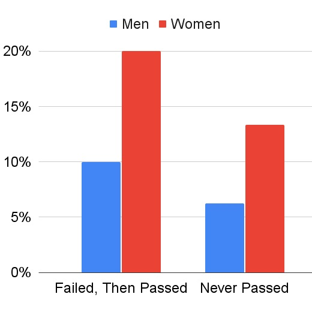

September 27, 2021
15 Steps to Donate a Kidney
July 21, 2021
Quick Reference Sheet for Bond Graphs
August 27, 2020

The MIT MechE Qualifying Exam Fails Women
July 25, 2020
Common Public Speaking Problems and Exercises to Fix Them
May 28, 2020
Biblical Inerrancy
October 10, 2019
Graduate Student Mental Health is in Crisis
April 15, 2018